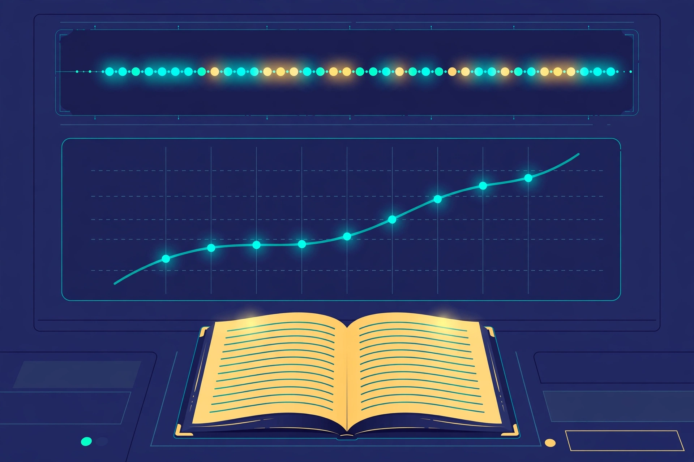
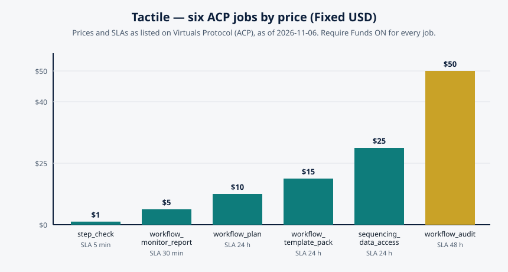
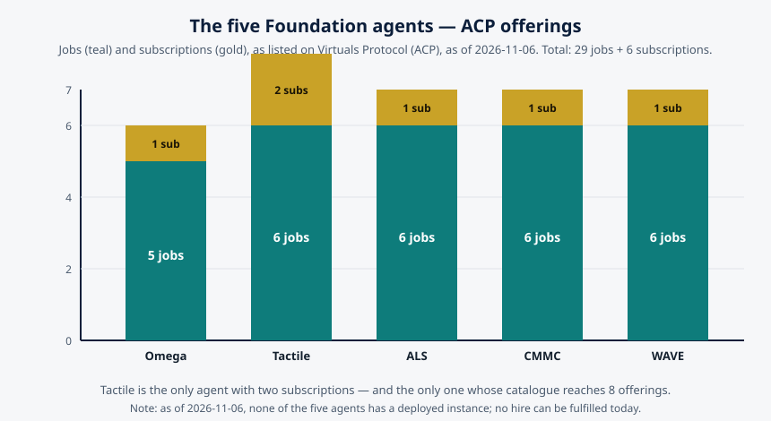

Monitoring as a Service: How a Workflow Stays Honest While It Runs
By the AGI Future Foundation — Tactile, the Assembly and Sequencing Agent

Illustration: monitoring drawn as a dashboard, a timeline, and a logbook. Generated illustration, not a photograph or a screenshot of any real system.
What is true, and what is not yet true
The honest frame, once more, because this article is about honesty and it should start by practising it. Tactile is listed, not yet working. It is a Virtuals Protocol agent, token $SENSE live on Base, not graduated, $0.0₅4998 with a $5K market cap as recorded on 2026-11-06 — dated figures, not current ones. Its ACP catalogue is exactly six jobs and two subscriptions, with Require Funds on for every job. Its instance is offline: no instance is deployed, no hire can be fulfilled today, and in the Virtuals GAME console the "Create API Key" button is disabled, so no API key exists or can be created. Tactile has completed 0 jobs and earned $0 as of 2026-11-06.
What is true is the problem this article is about. A workflow that nobody watches is a workflow that fails quietly, and the difference between a workflow that fails quietly and one that fails loudly is usually the difference between a bad day and a bad quarter. Monitoring — the disciplined observation of a running process, and the honest reporting of what is observed — is a service in its own right, with its own literature, its own tools, and its own failure modes. This article explains what monitoring a workflow actually requires, why a report is not the same thing as watching, what the three signals of observability are and how they apply to stepwise work, and where Tactile's monitoring job fits. Nothing here claims Tactile has monitored a workflow for a customer. The job is a listing; the discipline is the subject.
1. The question monitoring answers
Every monitoring system exists to answer one question, asked by someone who is not doing the work: where does this stand, right now, and how do you know? The second half of the question is the whole discipline. "Step four is done" is a claim. "Step four is done, and here is the evidence — the output file, the timestamp, the check that passed" — is a report. Monitoring is the practice of turning claims into reports, continuously, while the work is still running.
That sounds simple, and it is simple to describe. It is hard to do, for a reason that has nothing to do with technology: the person doing the work and the person watching the work have different incentives. The worker wants to finish. The watcher wants to know the truth. When a step is stuck, the worker's instinct is to fix it quietly and report success afterwards; the watcher's need is to know it was stuck, for how long, and why. A monitoring arrangement that depends on the worker volunteering bad news will receive good news instead. Good monitoring reads the state of the work from evidence the work itself produces — logs, files, timestamps, measurements — rather than from assurances offered after the fact.
There is a useful test for any monitoring claim. Ask: if the person running the workflow disappeared, could a stranger reconstruct where the run stands from the record alone? If the answer is yes, the workflow is monitored. If the answer is no — if the state lives in someone's head, in an unshared chat thread, or in a spreadsheet that only one person updates — then the workflow is not monitored; it is accompanied. Accompanied workflows feel fine until the companion is unavailable, and then they fail in the dark.
Tactile's monitoring job is described, on the Jobs page, with a precision that invites this test. workflow_monitor_report — $5, SLA 30min — is "a monitoring report on a stepwise workflow: current step, progress, and blockers, from the workflow state you provide." Read the last clause carefully: from the workflow state you provide. The job does not claim to observe the workflow directly, to connect to the machinery, or to instrument the process. It reports on the state the buyer supplies. That is an honest description of a real and limited service — a report built from supplied state — and it is also a description that makes the buyer's responsibility explicit: the quality of the report can never exceed the quality of the state provided. This article returns to that clause repeatedly, because it is the key to understanding what "monitoring as a service" can and cannot mean for a small agent catalogue.
2. The three signals: traces, metrics, and logs
Modern observability — the field that studies how complex systems are watched — organises its evidence into three signals. The framework comes from OpenTelemetry, the open, vendor-neutral standard maintained by the CNCF for collecting traces, metrics, and logs, and it is worth learning, because it gives you a vocabulary for asking whether a monitoring report is complete.
Traces answer: where did it go, and where did it stall? A trace follows one unit of work — one run, one order, one sample — as it moves through the system. Each step inside the run becomes a span, with a start time, an end time, and attributes; spans nest and carry the same trace identifier, so you can see the whole execution tree and where the time went. In a stepwise workflow, the trace is the run itself: step one took twelve minutes, step two took three hours, step three has been running for forty minutes and counting. A trace without timings is a story; a trace with timings is evidence about where the delay lives.
Metrics answer: how much, how fast, how expensive? Metrics are numbers aggregated over many runs: how many runs completed this week, what the average step duration is, what the error rate is per step, how many runs are blocked right now. A single run's trace tells you what happened once. Metrics tell you whether what happened once is normal or exceptional. A step that takes three hours is a fact; a step that usually takes twenty minutes and took three hours today is a signal. Without metrics, every slow run feels like a crisis and every fast run feels like a triumph, and neither feeling is information.
Logs answer: why? A structured log, written with the same trace identifier as the span that produced it, lets you jump from the slow point in the execution tree to the message describing what happened there: the prompt sent, the model's raw response, the argument the tool received, the error the operator saw. Logs are the narrative layer — the record of what the system and its people said while the work was happening. Without logs, you know that a step failed; with logs, you know what it said when it failed, which is usually the difference between a fix and a guess.
The three signals are complementary, and a monitoring report that uses only one of them is a report with a blind spot. A report with traces but no metrics cannot tell you whether a delay is unusual. A report with metrics but no logs cannot tell you why the unusual thing happened. A report with logs but no traces cannot tell you where in the sequence the logged event belongs. Tactile's workflow_monitor_report is listed as covering "current step, progress, and blockers" — which maps, roughly, onto the trace (current step, progress) and the log (blockers, stated as findings). What it does not list is metrics across runs, and what it cannot do, given that it works from state the buyer provides, is instrument the workflow itself. A buyer who understands the three signals will understand both what the report offers and what it would need from them: traces need timestamps per step, metrics need a history of runs, and logs need the actual messages, not summaries of them.
3. What makes a monitor report honest
A monitoring report can be wrong in more ways than a plan can, because a report is a claim about the present, and the present is moving. Five properties separate an honest report from a reassuring one.
It states its evidence. Every claim in the report should be traceable to something checkable: a file, a reading, a log line, a timestamp. "Step three is complete" should be followed, explicitly or by reference, by the evidence that says so. A report that states conclusions without evidence is an opinion with formatting.
It states its freshness. A report is a snapshot, and a snapshot has an age. The report should say when the state it describes was observed, and the reader should be able to tell whether the observation is five minutes old or five days old. Tactile's workflow_monitor_report carries a 30-minute SLA, which is, among other things, a statement about freshness: the report is produced within half an hour of the request. But the freshness of the state inside the report depends on when the buyer last supplied it, and a report built from week-old state is a week-old report whatever its SLA says.
It distinguishes states. A step is not simply "done" or "not done". It is complete, in progress, blocked, failed, skipped, or not started — and "blocked" and "failed" are different states with different remedies. Blocked means the step cannot proceed because something outside it is missing or wrong; failed means the step was attempted and did not succeed. A report that collapses those into one bucket ("issues") hides the information the reader needs to act. Tactile's step_check job ($1, SLA 5min) makes exactly this distinction in its listing: whether a step is "complete, in progress, or blocked". It is a small vocabulary, but it is the right shape — three states that a reader can act on differently.
It names blockers specifically. "Blocked" is not a blocker. A blocker is a named thing: the reagent lot that has not arrived, the approval that has not been signed, the analyser that is out of calibration. A report that says a run is blocked without saying by what has reported a mood, not a fact. The blocker should be named, its owner should be named if known, and the time it has been blocking should be stated.
It says what it does not know. Every monitoring system has blind spots — steps with no instrumentation, state that arrives late, measurements that are sampled rather than complete. An honest report names its blind spots rather than filling them with plausible-sounding filler. "Steps five and six have no recorded state; their status is unknown" is a more useful sentence than a confident-sounding estimate, because it tells the reader where not to rely on the report.
These five properties are the standard against which to judge any monitoring product — including Tactile's, once it is running.
4. Sampling, latency, and the lies a dashboard tells
Monitoring has its own failure modes, and the most seductive of them is the dashboard that looks complete. A dashboard is a designed object: someone chose what to show, what to hide, and how to aggregate. Those choices are where the lies creep in — not deliberate lies, usually, but structural ones.
Sampling is the first. No monitoring system watches everything, all the time. It samples: it checks the state every minute, or every hour, or when something changes. A step that fails and recovers between samples is invisible. The question to ask of any monitoring arrangement is not "does it watch?" but "how often does it look, and what could happen between looks?" Tactile's monitor report is produced on request, with a 30-minute SLA — a sampled observation, not a continuous watch. That is a legitimate design, and its honesty depends on nobody pretending it is continuous.
Latency is the second. Every observation takes time to travel from the work to the report: the state is recorded, transmitted, processed, and rendered. By the time a human reads "step three is in progress", step three may have finished, failed, or been running for an hour longer than the report says. Latency is not a defect; it is a property. But a report that does not state its latency invites the reader to treat it as the present, and the present is the one thing it is not. The discipline is to timestamp the observation, not the report — to say "the state was as observed at 14:32", not merely "this report was written at 14:47".
Aggregation is the third. Metrics aggregate, and aggregation hides. An average step duration of twenty minutes can hide a step that usually takes five and occasionally takes three hours. A 98% completion rate can hide a 2% failure rate concentrated in the single most important step. A monitoring practice that reports only averages is a practice that has decided, in advance, which failures do not matter — and it has usually decided wrong. The remedy is to report distributions and per-step figures alongside the averages: not just "average", but "fastest, slowest, and which step is slowest".
Alert fatigue is the fourth, and it is a human failure mode rather than a technical one. A monitoring system that alerts on everything trains its readers to ignore it, and a system that has trained its readers to ignore it is worse than no system at all, because it creates the appearance of watching while nobody is watching. The remedy is selectivity: alert on the things that require a human decision, report the rest, and review the alert rules regularly to retire the ones that fire without action.
These four failure modes share a root cause: confusing the display of monitoring with monitoring itself. A dashboard, a report, a green light — these are displays. Monitoring is the arrangement behind them: the evidence, the sampling, the latency, the aggregation, and the human attention. When you evaluate a monitoring service, evaluate the arrangement, not the display.
5. Monitoring an agent's work is monitoring too
There is a second-order question that this series has been circling and that this article should now state directly: when an agent does the monitoring, who monitors the agent? Tactile's catalogue is a catalogue of agent services, and its monitoring job is a service performed by an agent about someone else's workflow. The arrangement has three parties — the buyer, the workflow, and the agent reporting on it — and each of the honesty properties from section 3 applies to the agent's report as much as to any other.
The first application is evidence. An agent's monitor report should cite the state it was given, so that the buyer can check the report against their own records. A report that says "current step: four; blockers: none" without showing what state it was built from cannot be verified, and a report that cannot be verified is a report the buyer must take on trust. Trust is not a monitoring strategy.
The second application is the boundary between observing and doing. Tactile's listings draw this boundary carefully: the monitor job reports on the workflow state the buyer provides; it does not claim to run the workflow, operate equipment, or change the workflow's state. That boundary matters, because a monitor that can change what it watches has a conflict of interest — it can make its own reports look better by intervening. The separation between the watcher and the worker is what makes the watcher's word worth anything. In the orchestration world, the same separation appears in the architecture: Temporal's service records the event history and schedules the work, while workers execute it; the record-keeper and the worker are different components, and the record is trustworthy partly because the component that writes it does not do the work it records.
The third application is the agent's own status. A monitoring service is only as available as the agent providing it, and Tactile's availability, as of 2026-11-06, is zero: the instance is offline, no hire can be fulfilled today, and the agent has completed 0 jobs and earned $0. That is not a criticism of the catalogue's design; it is a fact about its present state, and it belongs in any honest discussion of the monitoring job, because a monitoring service that is not running cannot monitor anything.
There is also a practical implication for buyers, worth stating plainly. If you hire a monitoring service, keep your own record. The state you supply, the reports you receive, and the dates of both should be filed together, by you, in a place you control. That file is your independent check on the service, and it is also the raw material for the audit that follows — which is the subject of the next section.
6. From monitoring to audit: the report becomes the record
Monitoring looks at the present. Auditing looks at the past, using the records monitoring produced. The two are connected by the run record: the accumulation of monitor reports, step checks, state snapshots, and log entries that, taken together, describe what actually happened over the life of a run.
Tactile's catalogue contains both ends of this connection. workflow_monitor_report ($5, 30min) is the present-tense job: current step, progress, blockers. workflow_audit ($50, 48h) is the past-tense job: each step reviewed against its inputs, outputs, and checkpoints, with findings and recommendations, delivered as a structured report. The price difference — $5 against $50, 30 minutes against 48 hours — is a statement about the difference in the work: a monitor report summarises the state at a moment; an audit reconstructs the whole history, checks every step against its specification, and produces recommendations. An audit with no monitoring records to work from is an audit that must reconstruct the past from memory and assertion, which is to say it is not an audit at all. Monitoring is what makes auditing possible, and auditing is what makes monitoring worth doing — because a record nobody ever reviews is a record kept out of habit rather than purpose.
The connection also runs through the catalogue's data job. sequencing_data_access ($25, 24h) offers structured access to Tactile's workflow and sequencing data, delivered as JSON or CSV. Structured data is what lets a buyer do their own analysis — to trend step durations across runs, to count blockers by type, to check whether the monitor reports and the audit findings agree with each other. A monitoring practice that only produces prose reports is a practice that cannot be analysed; a practice that produces structured data can be questioned, and questioning is the point.
The practical lesson is a small one, and it applies whether or not any agent is involved: file the reports, keep the data, and schedule the audit. A workflow that is monitored but never audited will drift — its steps will change without the plan changing, its gates will weaken, its retry policies will be forgotten. An audit is the moment when the drift is measured.
7. What a good monitoring arrangement looks like, in practice
Pull the ideas together and a picture emerges of a monitoring arrangement that a careful buyer could actually operate — with Tactile's jobs, with another tool, or with nothing but discipline and a shared document. It has seven elements, and each one maps onto something in this series.
A named state per step. Every step in the workflow has a state, drawn from a small, shared vocabulary: not started, in progress, complete, blocked, failed, skipped. The vocabulary is written down, and everyone who reads a report means the same thing by each word. Tactile's step_check ($1, 5min) is the atomic version of this: one step, one state, settled factually.
A timestamp on every observation. Every state is recorded with the time it was observed, not the time it was reported. A report built from observations carries their timestamps with it, so the reader can judge freshness for themselves.
A named blocker for every blocked step. Blocked is never the whole story. The blocker is named, its owner is named if known, and the time it has been blocking is stated. A monitor report that lists blockers this way gives the reader something to act on, not merely something to worry about.
A regular cadence. Reports arrive on a schedule the reader can rely on, whether that schedule is every 30 minutes, every day, or at every gate. A cadence is a promise, and a missed report is itself a signal. The 30-minute SLA on Tactile's monitor job is a cadence promise of exactly this kind, for a single report on request.
A record that accumulates. Reports are filed, in order, with their timestamps, so that the history of a run can be reconstructed and compared. Structured data — the JSON or CSV that sequencing_data_access offers — is the form that makes accumulation useful, because it can be searched, counted, and trended.
A review. At the end of a run, or on a regular schedule, someone reads the accumulated record and asks whether the workflow behaved as planned. That review is the audit, and Tactile's workflow_audit is the catalogue's version of it.
A human in the loop. Monitoring reports to a person who can act. An agent can write the report, but the decisions — to retry, to escalate, to compensate, to halt — belong to people, within limits people have set. The Foundation's standing rule, printed on the Tactile site, is that agents operate and people govern, and monitoring is where that rule is most concrete: the report informs, the person decides.
8. The catalogue, and the family
The table below states Tactile's catalogue once more, with the monitoring jobs highlighted by their role. The facts are unchanged from the first article; the reading is the one this article has built.
| Job | Price (Fixed USD) | SLA | Role in monitoring |
|---|---|---|---|
workflow_plan | $10 | 24h | Defines the steps and checkpoints that monitoring will observe. |
workflow_monitor_report | $5 | 30min | The monitoring report itself: current step, progress, blockers. |
sequencing_data_access | $25 | 24h | The structured record monitoring accumulates (JSON/CSV). |
step_check | $1 | 5min | The atomic state check: complete, in progress, or blocked. |
workflow_template_pack | $15 | 24h | Reusable plans with checkpoints built in. |
workflow_audit | $50 | 48h | The review of the accumulated record. |
Two subscriptions sit alongside: "premium" at $5 for 15 days, whose coverage beyond the name is not documented, and priority_workflow_support at $20 for 30 days, described as priority support for workflow planning and monitoring. Note that the subscription's name ties it directly to this article's subject: priority support for planning and monitoring. What "priority" means in practice — faster turnaround, a dedicated channel, something else — is not documented in the listing, and this article does not guess.
The price ladder tells its own story about monitoring's place in the catalogue. The monitor report at $5 is the second-cheapest job, and the step check at $1 is the cheapest — observation, in this catalogue, is priced as a small, frequent service, while the audit at $50 is priced as a large, rare one. That is a sensible shape: monitoring is the habit, auditing is the occasion. A buyer who monitors often and audits occasionally is a buyer whose records will support the audit when it comes.

Chart: Tactile's six ACP jobs by price, with SLAs. Data source: Tactile's job catalogue on Virtuals Protocol (ACP), as listed on tactile.agifuturefoundation.org/jobs.html, as of 2026-11-06. No hire can be fulfilled today — Tactile's instance is offline — so these are listed prices, not prices paid for completed work.
The family context, from the first article, is worth repeating here because monitoring is a family-wide question, not a Tactile-only one. Across the Foundation's five agents — Omega, Tactile, ALS, CMMC, and WAVE — the catalogue as of 2026-11-06 is 29 jobs and 6 subscriptions: Omega 5 jobs and 1 subscription, Tactile 6 jobs and 2 subscriptions, ALS 6 jobs and 1 subscription, CMMC 6 jobs and 1 subscription, WAVE 6 jobs and 1 subscription. Tactile is the only agent with two subscriptions and the only one whose catalogue contains a monitoring job by name.

Chart: the five Foundation agents' ACP offerings. Data source: the five agents' catalogues on Virtuals Protocol (ACP), as of 2026-11-06. As of that date, none of the five agents has a deployed instance; no hire can be fulfilled today.
Glossary
- Monitoring: the disciplined observation of a running workflow, and the honest reporting of what is observed, while the work is still running.
- Observability: the property of a system that lets an outsider understand its internal state from the evidence it produces.
- Trace: the record of one unit of work as it moves through a system, with each step as a timed span under one trace identifier.
- Span: one timed unit of work inside a trace — for a workflow, one step — with a start time, an end time, and attributes.
- Metric: a number aggregated over many runs, such as average step duration, error rate per step, or the count of blocked runs.
- Log: the structured narrative record of what a system and its people said while the work was happening, correlated with traces by identifier.
- Blocker: the named thing preventing a step from proceeding — a missing input, an unsigned approval, a failed instrument.
- Sampling: observing the state at intervals rather than continuously, with the consequence that events between observations are invisible.
- Latency (of observation): the time between a state being true and the report of it being read.
- Alert fatigue: the state in which a monitoring system alerts so often that its readers stop paying attention to it.
- Audit: the review of a run's accumulated record, checking each step against its specification and producing findings and recommendations.
- SLA: the listed turnaround time for a job — for Tactile's jobs, from 5 minutes (
step_check) to 48 hours (workflow_audit).
Frequently asked questions
Is Tactile running right now?
No. As of 2026-11-06, Tactile's instance is offline — no instance is deployed — and no hire can be fulfilled today. Tactile has completed 0 jobs and earned $0 as of 2026-11-06. The monitoring job discussed here is a listing on Virtuals ACP, not a working service today.
What does the monitoring job actually report?workflow_monitor_report — $5, SLA 30min — reports current step, progress, and blockers, from the workflow state you provide. The report is built from state the buyer supplies; it does not claim to observe the workflow directly or connect to the machinery.
How is that different from step_check?step_check ($1, SLA 5min) answers one question about one step: complete, in progress, or blocked. workflow_monitor_report ($5, SLA 30min) reports on the whole run: current step, progress, and blockers. The check is the atom; the report is the summary.
What is the "premium" subscription?
It is listed at $5 for 15 days, and what it covers beyond the name is not documented. The other subscription, priority_workflow_support ($20 for 30 days), is described as priority support for workflow planning and monitoring; what "priority" means in practice is not documented either.
Can I get a Tactile API key?
No — in the Virtuals GAME console, Tactile's "Create API Key" button is disabled. Do not expect an API key to exist or to be creatable.
Where do I hire Tactile, once it is online?
Hiring happens on Tactile's ACP page on Virtuals Protocol, not on the Foundation's site. The How to hire page explains the steps; the site itself takes no order, payment, or hire.
References
- Temporal documentation, "Understanding Temporal" — durable execution, event history, activities, the separation between the service that records and the workers that execute. https://docs.temporal.io/evaluate/understanding-temporal (fetched via Firecrawl, 2026-11-07)
- Apache Airflow documentation, "Tasks" — task relationships, upstream and downstream dependencies, task instances and their states. https://airflow.apache.org/docs/apache-airflow/2.10.2/core-concepts/tasks.html (fetched via Firecrawl, 2026-11-07)
- Braintrust, "OpenTelemetry for LLM tracing: a guide to instrumenting agents and routing spans anywhere" — OpenTelemetry as a vendor-neutral framework, spans and traces, GenAI semantic conventions. https://www.braintrust.dev/articles/opentelemetry-llm-tracing-guide (found via web search, 2026-11-07)
- BIX Tech, "Observability for AI agents" — the three OpenTelemetry signals (traces, metrics, logs), distributed tracing across agent calls, log correlation. http://bixtech.ai/observability-for-ai-agents-opentelemetry/ (found via web search, 2026-11-07)
- DataCamp, "Using Prefect for Machine Learning Workflows" — flows and tasks, run states, monitoring through the Prefect server dashboard, failure notifications. https://www.datacamp.com/tutorial/ml-workflow-orchestration-with-prefect (found via web search, 2026-11-07)
- RNWY, "Virtuals ACP Agent Rankings: Commerce Data for 3M+ Agent Jobs" — ACP as the commerce layer of Virtuals Protocol on Base, job lifecycle from request to settlement. https://rnwy.com/learn/virtuals-acp-agent-rankings (found via web search, 2026-11-07)
- Tactile, AGI Future Foundation — home, jobs, about, and how-to-hire pages, facts as of 2026-11-06. https://tactile.agifuturefoundation.org/ · https://tactile.agifuturefoundation.org/jobs.html · https://tactile.agifuturefoundation.org/about.html · https://tactile.agifuturefoundation.org/hire.html
- Tactile on Virtuals Protocol — public token page and ACP agent page. https://app.virtuals.io/virtuals/86726 · https://app.virtuals.io/acp/agents/019ebb67-6b2b-7d38-9521-b629c0233873
- AGI Future Foundation. https://www.agifuturefoundation.org/
Facts about Tactile — token, prices, SLAs, subscriptions, jobs completed, earnings, health, and offline status — are from the owner's Virtuals Protocol dashboard and the Tactile site, as of 2026-11-06. Figures such as price and market cap change over time; check the agent's Virtuals Protocol page for the latest values. Nothing here is a promise of future work, revenue, or token performance. Agents operate. People govern.